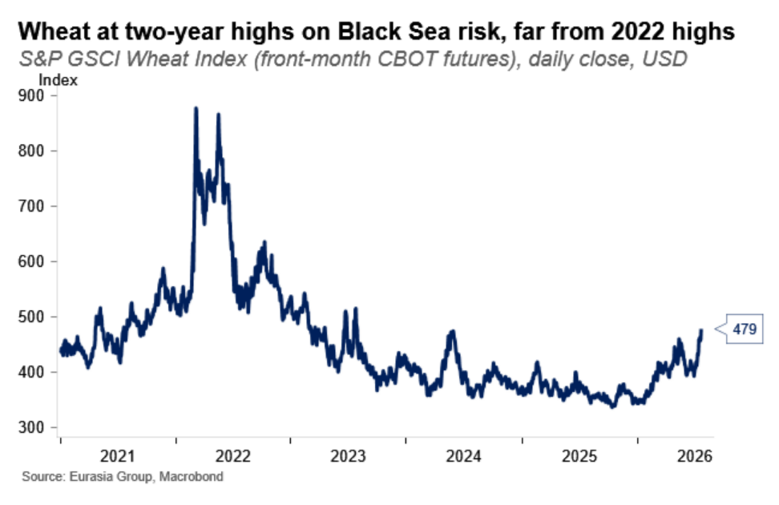
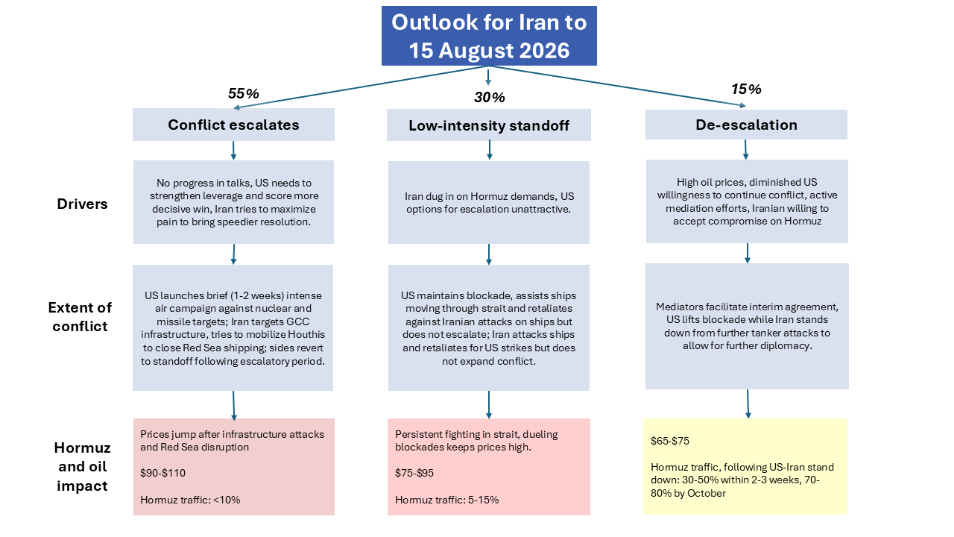

|
24 Jul 2026 08:27 EDT |
||
|
|||
|
|||
summary
|
|||
the top lineUS, Geo-technology—Fragmented policies will undermine US tech diplomacy
US, China, AI—Washington’s drift toward China-style governance will test US AI advantage
Russia, Ukraine—Black Sea strikes threaten Ukraine grain export revenue

Conference call notes: MENA crisis update

India—Government likely to reach compromise with student-led protesters
Upcoming conference calls |
||
eg in depthUS, Saudi Arabia—Saudi atomic energy deal will survive Congress: The US and Saudi Arabia signed a deal on 21 July for US companies to operate civil energy facilities in the country while enriching uranium stateside. Congress is very unlikely to block the deal, as it requires a two-thirds majority to override a presidential veto. It is not clear whether the deal includes any security guarantees or if it is contingent on Saudi Arabia’s accession to the Abraham Accords, involving diplomatic normalization with Israel, as President Donald Trump has indicated. Nevertheless, there is room for Trump to push Riyadh on the matter. Read more here. Reach out to discuss: unitedstates@eurasiagroup.net.
US, Healthcare—Trump’s generic drug tariff threat lacks credibility: On 21 July, Trump announced a 100% tariff on imported generic drugs, set to take effect in August 2028. EG doubts that the tariff will materialize and does not expect the administration to impose it on that timeline or at that rate. Instead, Trump is using the tariff threat to pressure drug companies to reshore production; however, it is unlikely generics pharmaceutical firms will be able to undertake any significant production shifts within two years. Broad tariffs on generic drugs would likely be too disruptive to the healthcare system for the administration to follow through. The two-year window gives Trump ample room to withdraw the threat. Read more here. Reach out to discuss: healthcare@eurasiagroup.net.
Upcoming events:
The EG Daily Brief is compiled by Jens Larsen, Lucy Eve, Babak Minovi, Pietro Guglielmi, Rahul Bhatia, Marilia Sirio, Joseph Craven, Martina Silva, and Trista Kelley, with help from Marina Tavares, and Astral Betteridge. |
||
 |
closing quipThe United States leads the world in AI innovation, and President Trump will keep it that way.”—White House spokesperson Liz Huston told the West Wing Playbook. |
||
 |
|||